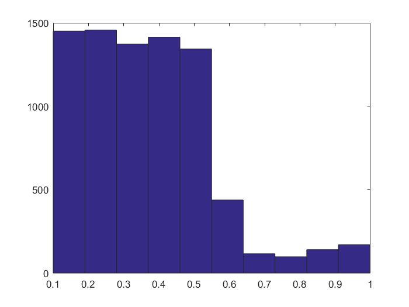
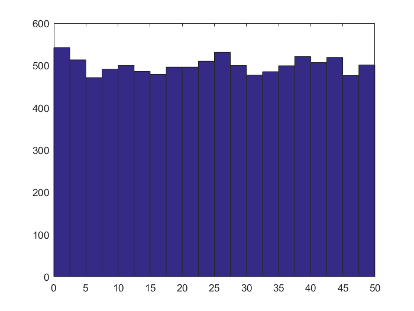

ОТЧЕТ
Contents
Задание 4
Для сгенерированной конгруентым методом последовательности ПСВ провести тест Хи квадрат на равномерность распределения
Выполнение
Для решения задачи было написано несколько функций 1. Базовая функция для проведения теста требуются наблюденные частоты, теоритические частоты, и уровень значимости (по умолчанию 0,05)
в результате будет получена расчетная статистика, значение обратной функции распредения для соотвесвующей вероятности,
function [chi_sq_stat, theory_stat, p_val] = chi_sq__dist_basic(ob_freq, th_freq, alpha)
if nargin < 3 alpha = 0.05; end
v = numel(ob_freq) - 1;
chi_sq_stat = sum(((ob_freq - th_freq).^2) ./ th_freq); theory_stat = chi2inv(1 - alpha, v); p_val = chi2pdf(chi_sq_stat, v);
end
например решим задачу про автобусы из дополнительного файла о соответвующем тесте.
ob_freq = [38 34 40 36 42] th_freq = ones(1,5) * 38 [sta, theo] = chi_sq_dist_basic(ob_freq, th_freq)
ob_freq =
38 34 40 36 42
th_freq =
38 38 38 38 38
sta =
1.0526
theo =
9.4877
2. Более уточняющающая функция для проведения теста на равномерность распределения. требуется передать данные для которых надо провести тест и количество интервалов на которое надо разбить исследуемую выборку результат выполнения аналогичен предыдущей функции
function [ chi_sq_stat, theory_stat, p_val ] = chi_sq_uni_test( series, count)
AmB = range(series);
borders = min(series):(AmB/count):max(series);
ob_freq = get_freq_by_borders(series, borders); ob_freq(2) = ob_freq(2) + ob_freq(1); ob_freq = ob_freq(2:end-1); p = (borders(2:end) - borders(1:end-1))./AmB; th_freq = p*numel(series);
[ chi_sq_stat, theory_stat, p_val ] = chi_sq_dist_basic(ob_freq, th_freq, 0.05);
end
краткое подтвержедние работоспособности
% создание равномерной выборки и тест над ней test_data = unifrnd(4,7, [1, 500]); disp('results for uniform distribution') [sta, theo] = chi_sq_uni_test(test_data, 5) % создание номрмальной выборки и тест над ней disp('results for normal distribution') test_data = normrnd(5, 6, [1, 500]); [sta, theo] = chi_sq_uni_test(test_data, 5)
results for uniform distribution
sta =
1.6000
theo =
9.4877
results for normal distribution
sta =
241.6400
theo =
9.4877
Результат
% создадим выборку конгруентым мультипликативным методом
res_data = number_generator([1357, 1357, 0, 5689], 8000, @cong_formula);
res_data(1:5)
ans =
0.3902 0.4244 0.1840 0.5098 0.1620
параметры заданы как в примере по соответвующему методу. результаты сходятся и нет оснований полагать, что дальше будет иначе. проведем по полученной выборке тест.
[sta, theo] = chi_sq_uni_test(res_data, 5)
sta =
4.2078e+03
theo =
9.4877
sta > theo - говврит о том что следует отвергнуть нулевую гипотезу в пользу первой. Это можно увидеть на гистограмме частот.
hist(res_data)
Задание 5
Проверить функцию unifrnd.
Решение
большая часть кода написана в процессе выполнения предыдущего задания, осталось только его вызвать.
uni_data = unifrnd(0,50, [1, 10000]); [sta, theo] = chi_sq_uni_test(uni_data, 20) % % так как sta < theo, нет оснований отклонить нулевую гипотезу. % Те же результаты на гистограмме. hist(uni_data, 20)
sta = 13.5360 theo = 30.1435